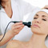

Биоревитализация лица
Что такое биоревитализация лица гиалуроновой кислотой?
Биоревитализация — это процедура омоложения кожи путём ввода в неё гиалуроновой кислоты неживотного происхождения. Химическую основу биоревилитации составляет гиалуроновая кислота, которая заполняет межклеточное тканевое пространство.
Для чего применяется биоревитализация лица?
Биоревитализацию делают на разных участках кожи, нуждающихся в этой процедуре. Так, в частности, биоревитализация лица делается с целью коррекции возрастных изменений и уменьшения мимических и гравитационных морщин.
С помощью чего проводится биоревитализация?
При биоревитализации кожи мы используем препарат Jalupro и препарат IAL-system Итальянской компании Fidia, производящей препараты на протяжении многих лет и завоевавшей отличную репутацию. Эти препараты обладают хорошей переносимостью, противовоспалительным свойством, не отторгаются клетками организма в силу высокой совместимости с ним и не имеют послеоперационных последствий в виде воспалений и уплотнений в зоне инъекции. Препараты первого поколения, состоят из нестабилизированной гиалурованой кислоты. Препараты второго поколения – это препараты на основе стабилизированной гиалуроновой кислоты. Стабилизатор способствует продолжительности его действия и снижает скорость разрушения препарата в коже. Препарат и курс его ввода подбирается врачом, в соответствии с возрастом пациента, его состояния кожи, общего состояния здоровья и различных методик.
Важно
В результате такой реставрации пациент видит, как тонус и наполнение кожи постепенно улучшаются, снижается количество и уменьшается глубина морщин, кожа становится более устойчивой к внешним воздействиям.
Показания к проведению биоревитализации
Биоревитализацию гиалуроновой кислотой следует проводить при первых признаках старения кожи. Примерно после 30 лет. Эту процедуру производят не только в области лица, но и шеи, декольте, кистей рук и внутренней поверхности предплечья.
вопросы и ответы
Расскажите пожалуйста с какого возраста эта процедура имеет место быть? и есть ли противопоказания? спасибо!
Наталья Кузнецова, врач-косметолог
Если особых проблем с кожей нет, то профилактические процедуры можно выполнять 1-2 раза в год по 1-2 процедуре с 22-24 лет для поддержания естественной красоты и свежести кожи. С течением лет количество курсов не меняется, а количество процедур увеличивается до 3-5. Можно использовать другую методику: каждые 3 месяца - 1 процедура.
Расскажите пожалуйста с какого возраста эта процедура имеет место быть?
Наталья Кузнецова, врач-косметолог
Если особых проблем с кожей нет, то профилактические процедуры можно выполнять 1-2 раза в год по 1-2 процедуре с 22-24 лет для поддержания естественной красоты и свежести кожи. С течением лет количество курсов не меняется, а количество процедур.
Рекомендуемые процедуры
-
Экспресс чистка

Длительность процедуры: 30 минут Стоимость: 1300 руб.
-
Комплексная чистка лица
Длительность процедуры: от 45 минут до 1 часа 15 минут Стоимость: 1800 руб.
-
Процедура глубокого увлажнения кожи
Длительность процедуры: 60 минут Стоимость: 1300 руб.